慰めも励ましもナシ。心理学と行動データで、あなたの「モテない原因」を60秒で特定。
タイプ別の処方箋まで出すから、覚悟だけしておいて。
ショート動画でレンに斬られている「ユウ」は、運営者がモデル。AIレンの辛口は机上の空論じゃない。運営者が長いあいだ踏み続けた地雷が、そのまま元になってる。
他人事だと思えなかったなら、診断はその答え合わせになる。
動画は後でもいい。先に結果だけ知りたいなら。
全8問・選ぶだけ・登録不要
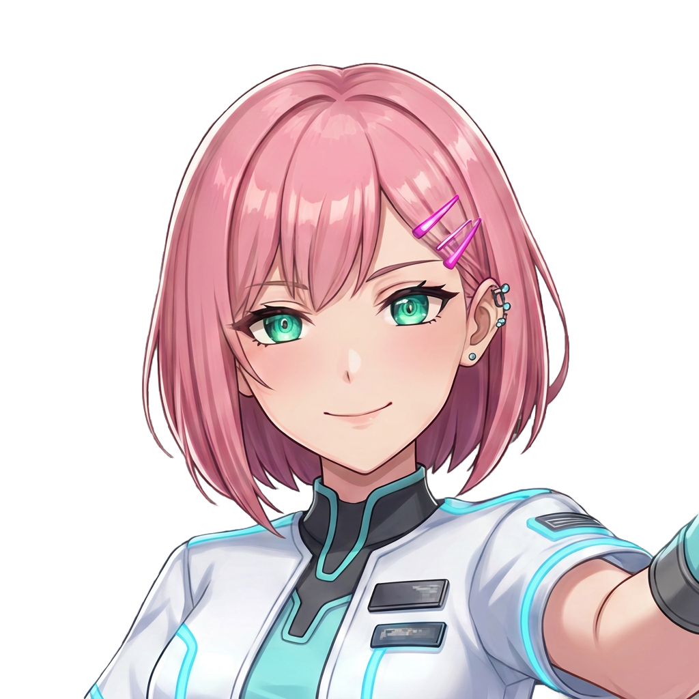
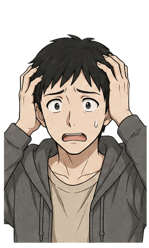
全部ユウの日常セリフ。「これ俺じゃん」が1個でもあったら、診断行きが確定なの。
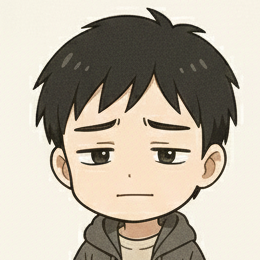
「面白い話とかないんで、聞かれたら答えるスタイルなんですよね。」
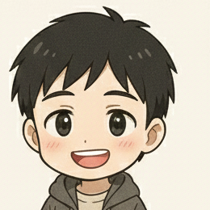
「深夜に2時間も電話してくれたんですよ？ これ脈ありでしょ。」
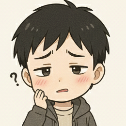
「既読ついて5分返信ないと、つい追いLINEしちゃうんですよね。」
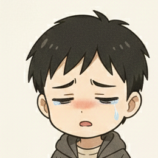
「誘うタイミングを待ってたら、いつのまにか半年経ってました。」
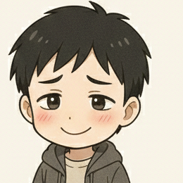
「『優しいね』って言われたんで、手応えはあると思うんですよ。」
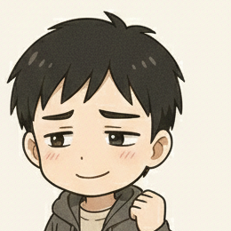
「服は全身黒で無難にまとめてます。だって失敗しないし。」
…で、レンに言わせると
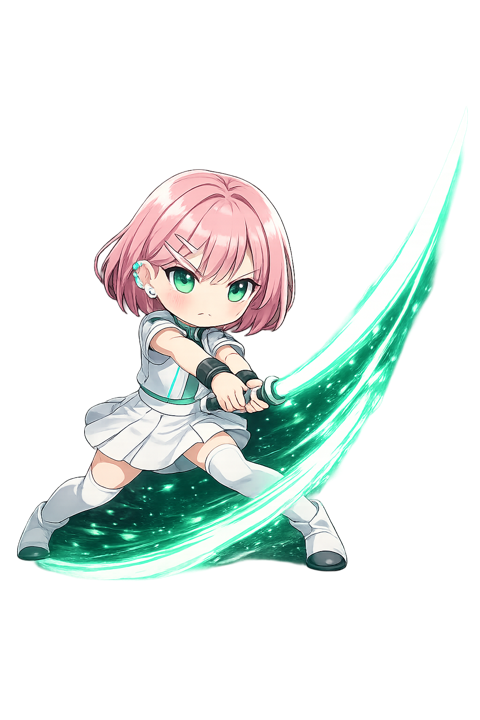
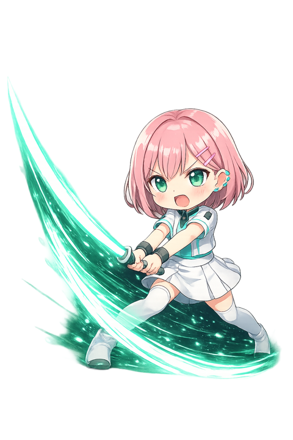
この掛け合いが、恋愛を丸裸にする。ユウのセリフが痛いのは、心当たりがある証拠なの。
スマホの中に住む恋愛分析AI。慰めない、励まさない。あなたが目を逸らしてきた「原因」だけを、データで淡々と突きつける。
「その自信、どこから来てるの。データは真逆だけど。」
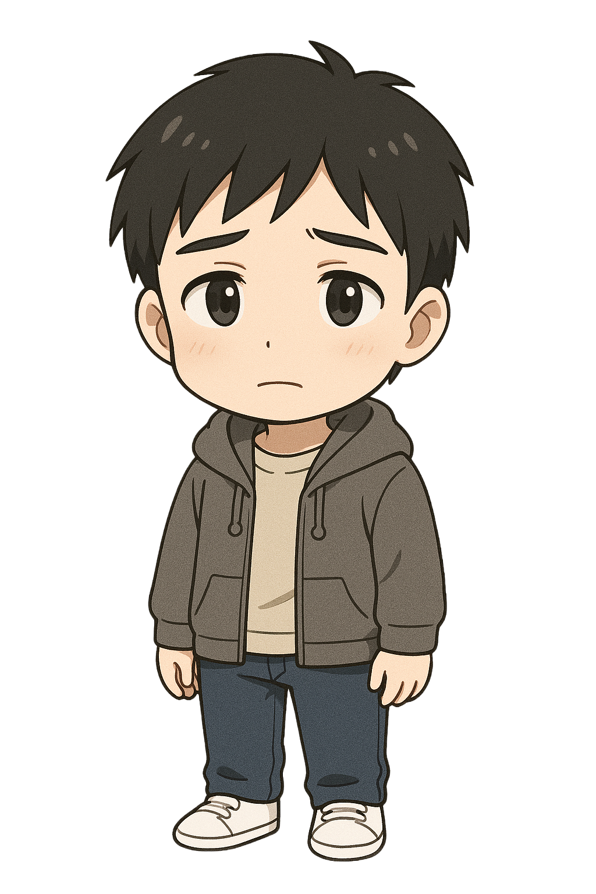
恋愛歴ほぼゼロの20代会社員。本人は真剣なのに、やることなすこと全部裏目。あなたが言えない言い訳を、先に全部言ってくれる。
「え！？ 俺、今まで全部それやってました…！」
「気合い」「自信を持て」みたいな精神論は禁止。誰がやっても再現できる行動だけ渡す。
「なんか避けられてる」の正体は、心理学で説明がつく。名前がつけば、初めて対処できるの。
「なんとなくモテない」を4タイプ×優先度に分解。最初に直すべき急所が1つに絞れる。
診断して満足、で終わらせない。タイプ別に、明日そのまま実行できる行動レベルで渡す。
結論。「フォローしておかないと、損するよ。」
公式LINEでは、写真の女性目線チェックリスト・プロフィール文NG辞典・初デート質問リスト30などを無料で配布中。診断を受けた人には、タイプ別の改善ロードマップも届きます。

登録は無料。通知はいつでも解除できます。
ショート動画・投稿は毎日更新中。今日刺さったなら、明日も刺されにきて。
全8問・60秒・登録不要。あなたの「非モテタイプ」と、最初に直すべき急所が分かる。
無料でレンに診断される →診断はあとでいい人は、LINE特典だけ先に受け取ることもできます。